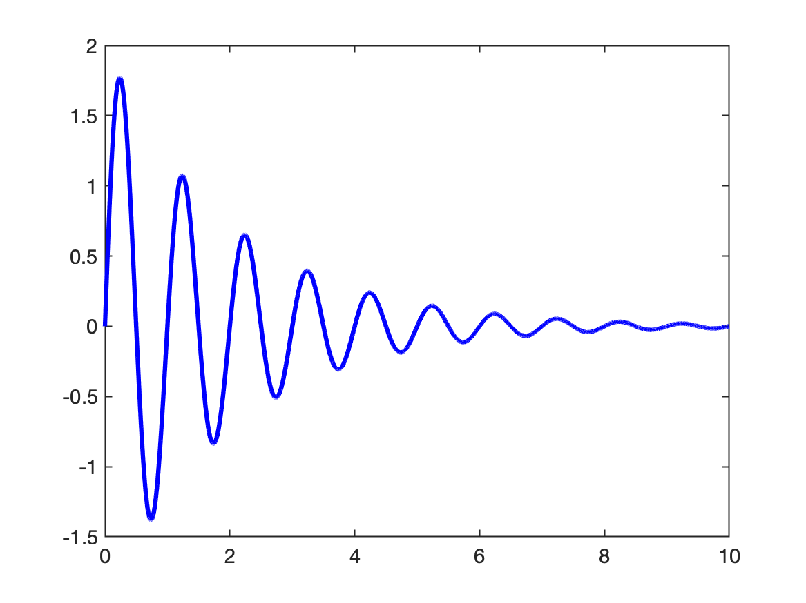
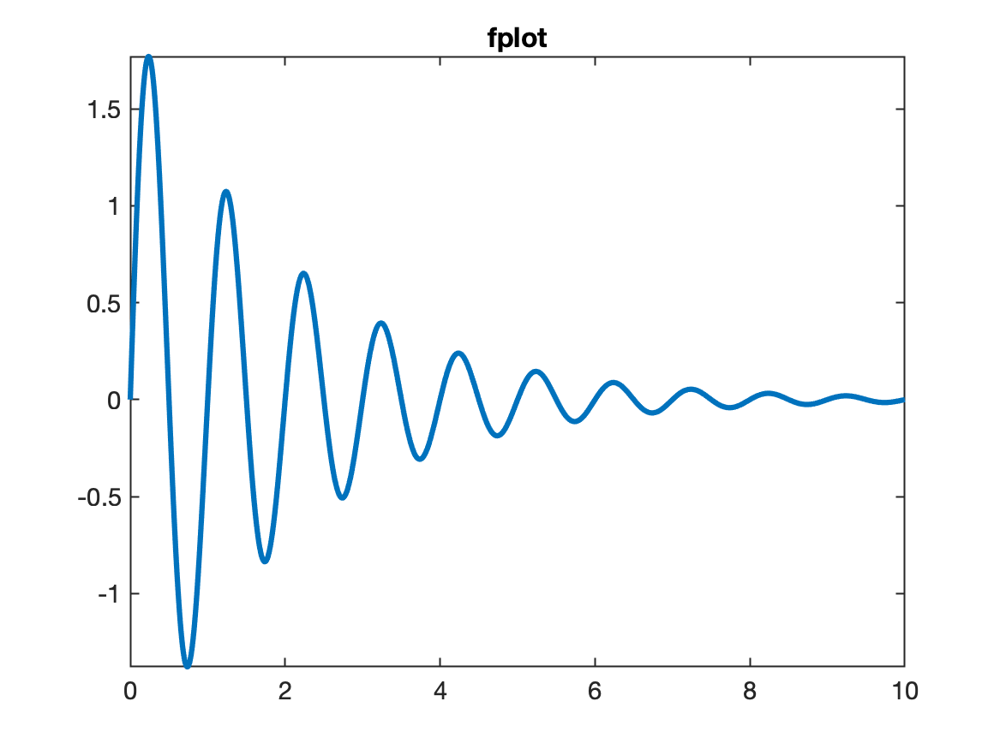
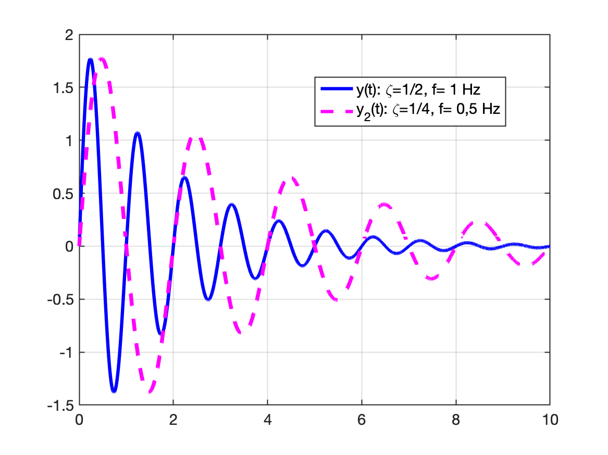
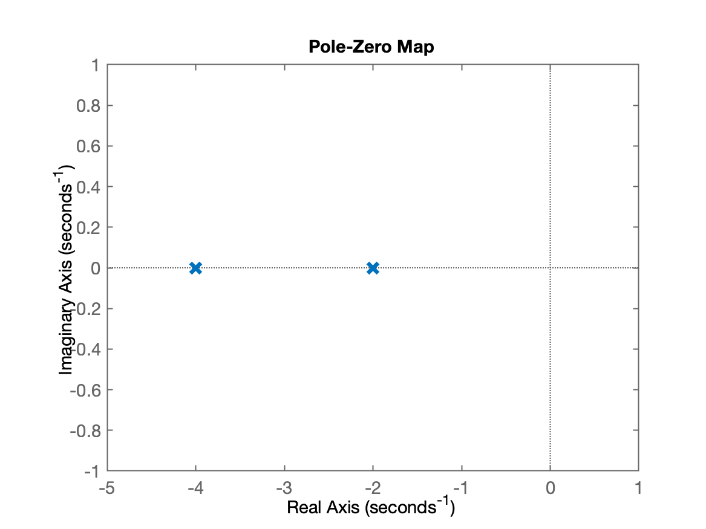
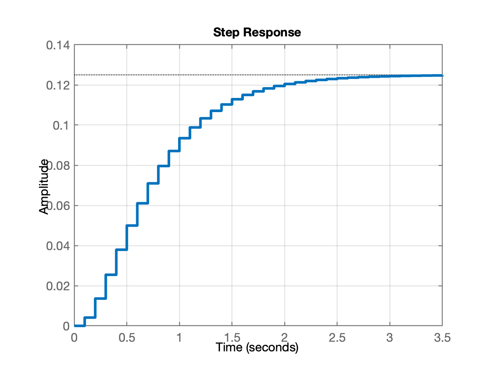
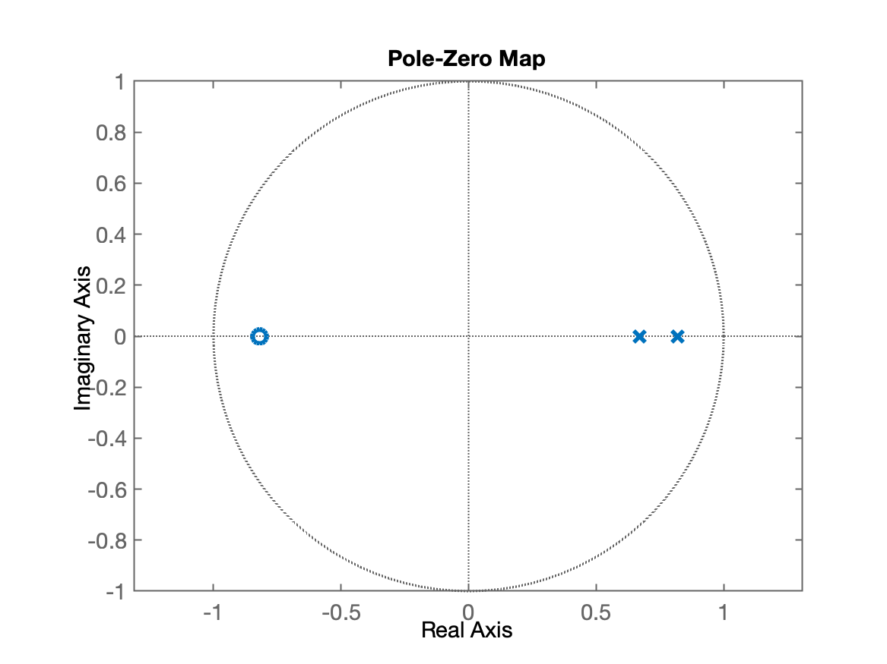

Introdução ao Matlab
Aula introdutória sobre uso do Matrlab (para iniciantes)
Uma ver aberto o Matlab, na sua janela de comandos ("Command Window"), digitar os seguintes comandos:
xxxxxxxxxx>> ver % para verificar toolboxes instalados-----------------------------------------------------------------------------------------------------MATLAB Version: 9.7.0.1190202 (R2019b)MATLAB License Number: 968398Operating System: macOS Version: 13.6.5 Build: 22G621 Java Version: Java 1.8.0_202-b08 with Oracle Corporation Java HotSpot(TM) 64-Bit Server VM mixed mode-----------------------------------------------------------------------------------------------------MATLAB Version 9.7 (R2019b)Simulink Version 10.0 (R2019b)Computer Vision Toolbox Version 9.1 (R2019b)Control System Toolbox Version 10.7 (R2019b)Curve Fitting Toolbox Version 3.5.10 (R2019b)Database Toolbox Version 9.2 (R2019b)Deep Learning Toolbox Version 13.0 (R2019b)Embedded Coder Version 7.3 (R2019b)Fixed-Point Designer Version 6.4 (R2019b)Fuzzy Logic Toolbox Version 2.6 (R2019b)Global Optimization Toolbox Version 4.2 (R2019b)Image Acquisition Toolbox Version 6.1 (R2019b)Image Processing Toolbox Version 11.0 (R2019b)Instrument Control Toolbox Version 4.1 (R2019b)MATLAB Coder Version 4.3 (R2019b)MATLAB Report Generator Version 5.7 (R2019b)Navigation Toolbox Version 1.0 (R2019b)Optimization Toolbox Version 8.4 (R2019b)Parallel Computing Toolbox Version 7.1 (R2019b)Partial Differential Equation Toolbox Version 3.3 (R2019b)ROS Toolbox Version 1.0 (R2019b)Reinforcement Learning Toolbox Version 1.1 (R2019b)Robotics System Toolbox Version 3.0 (R2019b)Sensor Fusion and Tracking Toolbox Version 1.2 (R2019b)Signal Processing Toolbox Version 8.3 (R2019b)Simscape Version 4.7 (R2019b)Simscape Driveline Version 3.0 (R2019b)Simscape Electrical Version 7.2 (R2019b)Simscape Fluids Version 2.7 (R2019b)Simscape Multibody Version 7.0 (R2019b)Simulink 3D Animation Version 8.3 (R2019b)Simulink Control Design Version 5.4 (R2019b)Simulink Desktop Real-Time Version 5.9 (R2019b)Simulink PLC Coder Version 3.1 (R2019b)Simulink Report Generator Version 5.7 (R2019b)Stateflow Version 10.1 (R2019b)Statistics and Machine Learning Toolbox Version 11.6 (R2019b)Symbolic Math Toolbox Version 8.4 (R2019b)System Identification Toolbox Version 9.11 (R2019b)Text Analytics Toolbox Version 1.4 (R2019b)O comando abaixo só funciona no Windows e permite ao usuário perceber a forma como o Matlab está usando a RAM de seu computador:
xxxxxxxxxx>> memoryFunction MEMORY is not available on this platform.>>Iniciando as primeiras operações com o Matlab:
Obs.: o caracter % funciona como um comentário para o Matlab. As declarações que precedem este caracter são ignoradas pelo Matlab.
Atribuições simples
xxxxxxxxxx>> clc % limpa a tela>> a=2a = 2>> b=4; % note que o carater ';' no final da declaração faz Matlab não repetir conteúdo da variável>> r=2+i*2 % criando uma variável complexar = 2 + 2i>> abs(r) % módulo do número complexoans = 2.8284>> angle(a) % ângulo do número complexo, resposta em radianos!ans = 0.7854>>Declarando matrizes
xxxxxxxxxx>> a=1; b=2; c=3; % várias atribuições na mesma linha, separar usando ";">> whos % verificando tamanhos, tipos e variáveis já criadas Name Size Bytes Class Attributes a 1x1 8 double b 1x1 8 double c 1x1 8 double >> a=[1 2; 3 4] % criando uma matriz 2x2a = 1 2 3 4>> b=[ 1 0; 0 1] % criando outra matriz 2x2, matrix indentidadeb = 1 0 0 1>>Obs.: Note que para o Matlab, qualquer variável é uma matriz, mesmo que com dimensão , e note que todas as partes numéricas das variáveis são consideradas com máxima precisão ("double").
Operações com Matrizes
xxxxxxxxxx>> c=a*b % multiplicando matrizesc = 1 2 3 4Note: que anteriormente foi feito:
Continuando...
xxxxxxxxxx>> d=[ 4 8]; % declarando outra matriz, d de 1x2>> e=a*d % tentando multiplicar matrizesError using *Incorrect dimensions for matrix multiplication. Check that the number ofcolumns in the first matrix matches the number of rows in the secondmatrix. To perform elementwise multiplication, use '.*'.>>Sobre multiplicações de matrizes:
Note: No comando anterior se tentou realizar . O Matlab interpretou este comando como sendo:
para um usuário iniciante do Matlab, pode parecer um simples cálculo de multiplicação, mas lembrar que o Matlab considera qualquer variável como sendo uma matriz de -linhas por -colunas, mesmo que sendo (variáveis escalares).
Então na última declaração, para o Matlab, o usuário tentou fazer:
Note que as dimensões internas das matrizes e são diferentes, o que realmente não permite que estas matrizes sejam multiplicadas desta forma.
Este problema pode ser resolvido se for feito algo como:
onde corresponde à transposta da matriz .
Neste caso, estaríamos fazendo (corretamente):
Verificando:
xxxxxxxxxx>> e=a*d'e = 20 44Trabalhando com números aleatórios
xxxxxxxxxx>> g=rand(10,1); % gerando uma matriz de 10 linhas x 1 colina com números aleatórios no intervalo: (0,1)>> help rand rand Uniformly distributed pseudorandom numbers. R = rand(N) returns an N-by-N matrix containing pseudorandom values drawn from the standard uniform distribution on the open interval(0,1). rand(M,N) or rand([M,N]) returns an M-by-N matrix. rand(M,N,P,...) or rand([M,N,P,...]) returns an M-by-N-by-P-by-... array. rand returns a scalar. rand(SIZE(A)) returns an array the same size as A. Note: The size inputs M, N, P, ... should be nonnegative integers. Negative integers are treated as 0. R = rand(..., CLASSNAME) returns an array of uniform values of the specified class. CLASSNAME can be 'double' or 'single'. R = rand(..., 'like', Y) returns an array of uniform values of the same class as Y. The sequence of numbers produced by rand is determined by the settings of the uniform random number generator that underlies rand, RANDI, and RANDN. Control that shared random number generator using RNG. Examples: Example 1: Generate values from the uniform distribution on the interval (a, b). r = a + (b-a).*rand(100,1); Example 2: Use the RANDI function, instead of <strong>rand</strong>, to generate integer values from the uniform distribution on the set 1:100. r = randi(100,1,5); Example 3: Reset the random number generator used by <strong>rand</strong>, RANDI, and RANDN to its default startup settings, so that <strong>rand</strong> produces the same random numbers as if you restarted MATLAB. rng('default') rand(1,5) Example 4: Save the settings for the random number generator used by <strong>rand</strong>, RANDI, and RANDN, generate 5 values from <strong>rand</strong>, restore the settings, and repeat those values. s = rng u1 = rand(1,5) rng(s); u2 = rand(1,5) % contains exactly the same values as u1 Example 5: Reinitialize the random number generator used by <strong>rand</strong>, RANDI, and RANDN with a seed based on the current time. <strong>rand</strong> will return different values each time you do this. NOTE: It is usually not necessary to do this more than once per MATLAB session. rng('shuffle'); rand(1,5) Replace Discouraged Syntaxes of rand and randn to use RNG to replace rand with the 'seed', 'state', or 'twister' inputs. See also randi, randn, rng, RandStream, rand, sprand, sprandn, randperm. See Other functions named rand.>>>> g % apenas requisitando que o Matlab mostre o conteúdo da variávelg = 0.81472 0.90579 0.12699 0.91338 0.63236 0.09754 0.2785 0.54688 0.95751 0.96489>> g=rand(100,100); % gerando uma matriz de 100x100 de números aleatórios>> whos % verificando tamanhos das variáveis já decladas Name Size Bytes Class Attributes a 2x2 32 double b 2x2 32 double c 2x2 32 double d 1x2 16 double e 2x1 16 double g 100x100 80000 double >> size(g) % outra forma (mais específica) de descobrir tamanho de certa variávelans = 100 100>> a=[1 1+i*2; 1-2*i 2] % matriz 1x2 com números complexosa = 1 + 0i 1 + 2i 1 - 2i 2 + 0iCriando vetores
Vamos supor que queremos gerar um gráfico temporal de uma função do tipo senoide amortecida exponencialmente:
onde: amplitude máxima (de pico) da senóide; fator de amortecimento da senóide; Frequência angular (rad/s) da senóide.
Lembrar que , onde frequência em Hz.
Poderíamos criar um vetor variando dentro de certo intervalo de tempo e depois usar a equação anterior para calcular um vetor de pontos .
xxxxxxxxxx>>t=[0:10] % gerando vetor t no intervalo [0,10], com passo 1t = 0 1 2 3 4 5 6 7 8 9 10>> t=[0:0.001:10]; % gerando vetor t no intervalo [0,1], com incremento de 0.001 (1 ms)>> size(t) % confirmando tamanho do vetor tans = 1 10001>> y=2*exp(-0.5*t)*sin(2*pi*1*t); % calculando uma senóide exponencialmente amortecidaError using *Incorrect dimensions for matrix multiplication. Check that the number ofcolumns in the first matrix matches the number of rows in the secondmatrix. To perform elementwise multiplication, use '.*'.>>Estamos querendo gerar uma senóide amortecida com (um valor baixo == lento) de frequência igual à 1 Hz.
Mas...
⚠️ Erro associado com multiplicação de matrizes, semelhante ao já gerado anteriormente, mas neste caso...
Note que quando realizamos qualquer operação aritmética envolvendo com uma matriz (ou vetor), o resultado será uma nova matriz (ou vetor).
Então, realizar a parte , que envolve o vetor , vai acabar gerando um vetor também de dimensão .
Note que o caso da declaração:
xxxxxxxxxxy=2*exp(-0.5*t)*sin(2*pi*1*t)envolve a multiplicação de 2 vetores/matrizes:
ou seja, realmente não há como multiplicar as 2 partes internas da expressão.
Mas podemos tentar solucionar este problema usando multiplicação ponto-à-ponto entre elementos de um vetor, usando o operador .*, mas mesmo assim:
xxxxxxxxxx>> y=2*exp(-0.5.*t)*sin(2*pi*1.*t)Error using * Incorrect dimensions for matrix multiplication. Check that the number ofcolumns in the first matrix matches the number of rows in the secondmatrix. To perform elementwise multiplication, use '.*'.Confirma que o erro está associado com a multiplicação entre as 2 partes internas da expressão. O operador .* deve estar localizado entre estas 2 partes:
xxxxxxxxxx>> y=2*exp(-0.5.*t).*sin(2*pi*1.*t); % sem erros agora...>> size(y) % confirmando tamanho do vetor yans = 1 10001>> plot(t,y,'b-') % gerando um gráfico t x y, cor azul, linha contínua>>O seguinte gráfico deve ter sido gerado:

Visualizando dados parciais de uma matriz
Os vetores e gerados antes são grandes.
Suponha que você queria verificar o conteúdo de parte deles, digamos, os primeiros 10 elementos de cada um. Podemos fazer algo do tipo:
xxxxxxxxxx>> [t(1,1:10)' y(1,1:10)']ans = 0 0 0.001 0.01256 0.002 0.025107 0.003 0.03764 0.004 0.05016 0.005 0.062665 0.006 0.075155 0.007 0.087629 0.008 0.10009 0.009 0.11253Note que ans é a variável que o Matlab sempre cria quando realiza um cálculo para o qual o usuário não atribuiu explicitamente uma variável de retorno. No caso, note que ans == answer (resposta em inglês).
No caso anterior, o resultado visual parece uma tabela, mas note que na realizade, o Matlab criou uma matriz contendo 10 linhas 2 colunas.
Note que o caracter [ indica o início da declaração de um vetor ou matriz. O caracter ] indica o fim deste vetor ou matriz. Mudanças de linha são indicadas pelo carater ;. Para separar os elementos de uma matriz ou vetor dentro da mesma linha, usar espaço em branco, ou caracter <TAB> ou ,. E se eventualmente a declaração de certa linha ultrapassar muitas colunas na tela, usar os caracteres ... e teclar <ENTER> (ou <RETURN>) para indicar mudança de linha, sem inidicar fim de uma declaração.
Então no caso anterior, acabamos por deliberadamente criar uma matriz de linhas colunas, onde a primeira coluna era formada pela transposta do primeiros 10 elementos do vetor . Como este vetor é grande, "separamos" a parte desejada, indicando o intervalo desejado de dados usando o operador :. Neste caso, explicitamente, separamos apenas os elementos da 1a-linha, colunas de 1 até 10. E realizamos uma transposta deste resultado, gerando um "vetor linha", neste caso, contendo 10 linhas. Mas no caso anterior, acrescentamos à definição da "nova" matriz "ans", uma segundo coluna formada pela transposta do vetor , neste caso, também indicando que queríamos separar apenas os 10 primeiros elementos deste vetor (colunas de 1 até 10, linha = 1). O Matlab acabou gerando então uma matriz "ans" e mostrando a mesma na tela. O resultado visualmente parece uma tabela.
Gráficos Iniciais no Matlab
Gerando gráficos simples usando Matlab...
xxxxxxxxxx>> help plot plot Linear plot. plot(X,Y) plots vector Y versus vector X. If X or Y is a matrix, then the vector is plotted versus the rows or columns of the matrix, whichever line up. If X is a scalar and Y is a vector, disconnected line objects are created and plotted as discrete points vertically at X. plot(Y) plots the columns of Y versus their index. If Y is complex, plot(Y) is equivalent to plot(real(Y),imag(Y)). In all other uses of plot, the imaginary part is ignored. Various line types, plot symbols and colors may be obtained with plot(X,Y,S) where S is a character string made from one element from any or all the following 3 columns: b blue . point - solid g green o circle : dotted r red x x-mark -. dashdot c cyan + plus -- dashed m magenta * star (none) no line y yellow s square k black d diamond w white v triangle (down) ^ triangle (up) < triangle (left) > triangle (right) p pentagram h hexagram For example, plot(X,Y,'c+:') plots a cyan dotted line with a plus at each data point; plot(X,Y,'bd') plots blue diamond at each data point but does not draw any line. plot(X1,Y1,S1,X2,Y2,S2,X3,Y3,S3,...) combines the plots defined by the (X,Y,S) triples, where the X's and Y's are vectors or matrices and the S's are strings. For example, plot(X,Y,'y-',X,Y,'go') plots the data twice, with a solid yellow line interpolating green circles at the data points. The plot command, if no color is specified, makes automatic use of the colors specified by the axes ColorOrder property. By default, plot cycles through the colors in the ColorOrder property. For monochrome systems, plot cycles over the axes LineStyleOrder property. Note that RGB colors in the ColorOrder property may differ from similarly-named colors in the (X,Y,S) triples. For example, the second axes ColorOrder property is medium green with RGB [0 .5 0], while plot(X,Y,'g') plots a green line with RGB [0 1 0]. If you do not specify a marker type, plot uses no marker. If you do not specify a line style, plot uses a solid line. plot(AX,...) plots into the axes with handle AX. plot returns a column vector of handles to lineseries objects, one handle per plotted line. The X,Y pairs, or X,Y,S triples, can be followed by parameter/value pairs to specify additional properties of the lines. For example, plot(X,Y,'LineWidth',2,'Color',[.6 0 0]) will create a plot with a dark red line width of 2 points. Example x = -pi:pi/10:pi; y = tan(sin(x)) - sin(tan(x)); plot(x,y,'--rs','LineWidth',2,... 'MarkerEdgeColor','k',... 'MarkerFaceColor','g',... 'MarkerSize',10) See also plottools, semilogx, semilogy, loglog, plotyy, plot3, grid, title, xlabel, ylabel, axis, axes, hold, legend, subplot, scatter. Other functions named plot>>Função fplot()
Já usamos este comando antes. Mas esta não é a única forma de mostrar um gráfico de certa função matemática. Podemos usar a função fplot():
xxxxxxxxxx>> help fplot fplot Plot 2-D function fplot(FUN) plots the function FUN between the limits of the current axes, with a default of [-5 5]. fplot(FUN,LIMS) plots the function FUN between the x-axis limits specified by LIMS = [XMIN XMAX]. fplot(...,'LineSpec') plots with the given line specification. fplot(X,Y,LIMS) plots the parameterized curve with coordinates X(T), Y(T) for T between the values specified by LIMS = [TMIN TMAX]. H = fplot(...) returns a handle to the function line object created by <strong>fplot</strong>. fplot(AX,...) plots into the axes AX instead of the current axes. Examples: fplot(@sin) fplot(@(x) x.^2.*sin(1./x),[-1,1]) fplot(@(x) sin(1./x), [0 0.1]) If your function cannot be evaluated for multiple x values at once, you will get a warning and somewhat reduced speed: f = @(x,n) abs(exp(-1j*x*(0:n-1))*ones(n,1)); fplot(@(x) f(x,10),[0 2*pi]) See also fplot3, fsurf, fcontour, fimplicit, plot, function_handle.>>Voltando ao caso da nossa expressão anterior (a senoide amortecida exponecialmente)...
xxxxxxxxxx>> % y=2*exp(-0.5.*t).*sin(2*pi*1.*t); % lembrando da função desejada>> figure; % abre outra janela gráfica (vazia)>> fplot(@(t) 2*exp(-0.5.*t).*sin(2*pi*1.*t), [0 10])>> % acrescentando alguns detalhes ao gráfico gerado>> title('fplot')>> figure; % abre outra janela gráfica (vazia)>> plot(t,y,'m-') % mostra gráfico usando plot na nova janela>> % compare os 2 gráficos gerados.O comando fplot() anteiror deve ter gerado um gráfico como:

Plotando 2 curvas no mesmo gráfico
xxxxxxxxxx>> % criando um 2o-vetor de dados:>> y2=2*exp(-0.25.*t).*sin(2*pi*0.5.*t);>> whos Name Size Bytes Class Attributes a 2x2 64 double complex ans 10x2 160 double b 2x2 32 double c 2x2 32 double d 1x2 16 double e 2x1 16 double g 100x100 80000 double t 1x10001 80008 double y 1x10001 80008 double y2 1x10001 80008 double >> plot(t,y,'b-', t,y2,'m--') % plotando 2 curvas no mesmo gráfico>> legend('y(t): \zeta=1/2, f= 1 Hz', 'y_2(t): \zeta=1/4, f= 0,5 Hz') % acrescentando uma legendaDesta vez deve ter sido gerado um gráfico como:

Uso do Matlab em Controle
Declarando uma função transferência
Suponha que se queira criar uma variável G para a função transferência:
xxxxxxxxxx>> % G=tf(num,den);>> num=1;>> den=conv([1 2],[1 4]) % a função conv() permite multiplicar polinômiosden = 1 6 8>> den=poly([-2 -4]) % a função poly() gera um polinômio à partir das raízes passadas como argumento de entradaden = 1 6 8>> G=tf(num,den) % a função tf() criou o objeto função transferênciaG = 1 ------------- s^2 + 6 s + 8 Continuous-time transfer function.>> zpk(G) % permite mostrar conteúdo de uma tf no formato ganho (k), zeros (z) e pólos (p)ans = 1 ----------- (s+4) (s+2) Continuous-time zero/pole/gain model.>> T=0.1; % criando variável T para guardar valor período de amostragem (no caso 100 ms)>> BoG=c2d(G, T) % a função c2d calculou BoG(z) à partir de G(s) e TBoG = 0.004107 z + 0.003363 ---------------------- z^2 - 1.489 z + 0.5488 Sample time: 0.1 secondsDiscrete-time transfer function.>> zpk(BoG) % mostrando de forma mais "simpática" o conteúdo de BoG(z)ans = 0.0041073 (z+0.8187) --------------------- (z-0.8187) (z-0.6703) Sample time: 0.1 secondsDiscrete-time zero/pole/gain model.>> figure; step(G) % a função step() mostra resposta ao defrau para tf passada como argumento de entrada>> figure; step(BoG)>> figure; pzmap(G) % a função pzmap() mostra no plano-s ou plano-z os pólos e zeros de uma transfer function>> figure; pzmap(BoG)Os seguintes gráficos devem ter sido gerados:
| step(G) | pzmap(G) |
|---|---|
 |  |
| step(BoG) | pzmap(BoG) |
|  |  |
Fim.
(Onedark theme) Fernando Passold, em 25/03/2024